철도신호산업기사 (2006-05-14 기출문제)
1과목: 전자공학
1. 수정 발진기의 발진 주파수의 범위 f로 옳은 것은? (단, fs : 직렬·공진주파수, fp : 병렬 공진주파수이다.)
- fp > fs > f
- f > fs > fp
- fs > f > fp
- fp > f > fs
(정답률: 알수없음)

2. BJT의 3인자를 나열한 것은?
- 게이트, 에노드, 컬렉터
- 베이스, 이미터, 케소드
- 베이스, 이미터, 컬렉터
- 게이트, 에노드, 케소드
(정답률: 30%)
3. 그림의 회로는 OP Amp의 무슨 등가회로인가?
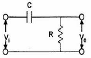
- CR발진회로
- 적분회로
- 분주회로
- 미분회로
(정답률: 알수없음)
4. 회로에 그림과 같은 파형이 입력되었을 때 출력 파형은?
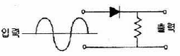
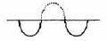
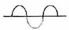
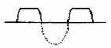
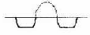
(정답률: 알수없음)
5. 연산증폭기에서 CMRR을 높이기 위해서 사용하는 것은?
- 전류미러회로
- 콘덴서
- 저항
- 리액터
(정답률: 알수없음)
6. 다이오드의 특성에 관한 그림에서 맞게 짝지어진 것은?
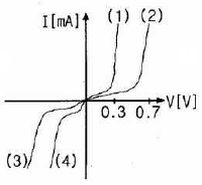
- (1) Si (2) Ge (3) Ge (4) Si
- (1) Si (2) Ge (3) Si (4) Ge
- (1) Ge (2) Si (3) Si (4) Ge
- (1) Ge (2) Si (3) Ge (4) Si
(정답률: 10%)
7. “펄스의 하강시간은 최대 진폭을 100%로 했을 때 펄스가 최대 진폭의 ( ① )%에서 ( ② )%까지 하강하는데 걸리는 시간을 말한다.”에서 ①, ②에 들어갈 적당한 숫자는?
- ① 60 ② 40
- ① 70 ② 30
- ① 80 ② 20
- ① 90 ② 10
(정답률: 알수없음)
8. 발진회로가 없는 검파 방식에 해당하는 것은?
- 평형 검파
- 다이오드 검파
- 헤테로다인 검파
- 링 검파
(정답률: 알수없음)
9. 그림과 같은 회로에서 IC=1mA일 때, 저항 PB는 몇 kΩ인가? (단, β=100, VCC=20V, VBE=0.5V 이다.)
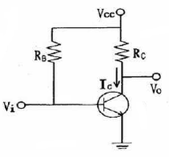
- 500
- 1950
- 2000
- 2⑤0
(정답률: 10%)
10. 그림과 같은 회로의 설명으로 틀린 것은? (단, 전압이득은 1이라고 한다.)
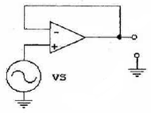
- 전압 플로어 (Voltage follower) 이다.
- 입력전압과 출력전압은 그 크기가 같다.
- 입력과 출력은 역상이다.
- 입력임피던스가 무한대, 궤환저항은 0이다.
(정답률: 30%)
11. 정보(Data)의 전송방식 중 “1” 또는 “0”을 기억한 다음 반드시 Zero-level 로 되돌아가는 통신방식은?
- FM방식
- AM방식
- RZ방식
- NRZ방식
(정답률: 알수없음)
12. 페르미 준위에 대한 설명 중 옳은 것은?
- 허용 에너지 준위를 평균한 것이다.
- 최적 에너지 허용 준위이다.
- 절대온도가 0 도일 때 최고로 점유된 전자의 에너지 준위이다.
- 절대온도가 0 도일 때 허용 에너지 준위를 평균한 것이다.
(정답률: 40%)
13. h 파라미터를 사용한 CE 등가회로에서 이미터와 베이스간의 전압 Vbe는?
- hfeIb + hoeVce
- hieIb + hreVce
- hieIb + hfeVce
- hreIb + hoeVce
(정답률: 알수없음)
14. 그림과 같은 회로에서 L의 용량이 무한대라면 R의 양단에 어떤 전류가 나타나는가?
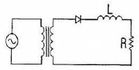
- 저주파
- 고주파
- 고조파
- 직류
(정답률: 알수없음)
15. 증폭기의 잡음지수는 얼마가 되는 것이 가장 이상적인가?
- -1
- 0
- 1
- ∞
(정답률: 알수없음)
16. 연산증폭기를 부궤환(NF8) 상태로 동작할 경우 옳은 것은?
- 대역폭 감소
- 대역폭 증가
- 이특 증가
- 출력 임피던스 증가
(정답률: 알수없음)
17. T형 플립플롭에 대한 설명 중 옳은 것은?
- 클럭펄스가 인가되면 출력은 1이다.
- 클럭펄스가 인가되면 출력은 반전이다.
- 클럭펄스에 관계없이 출력은 1이다.
- 클럭펄스에 관계없이 출력은 반전이다.
(정답률: 알수없음)
18. 다음과 같이 주어진 2진수를 16진수로 변환한 것은?
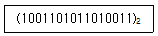
- 89C1
- 89C2
- 9AD3
- 9AD4
(정답률: 알수없음)
19. 비동기(직접)입력 RS플립플롭에서 A, B, C, D 에 해당하는 것은?
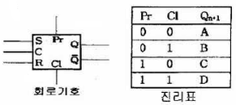
- A : Qn, B : 0, C : 1, D : 불안정
- A : 0, B : Qn, C : 1, D : 불안정
- A : Qn, B : 1, C : 0, D : 불안정
- A : 불안정, B : 0, C : 1, D : Qn
(정답률: 알수없음)
20. 반송파 전력이 8kW일 때, 변조도를 70%로 진폭변조 했을 경우에 피변조파 전력은 몇 kW인가?
- 5.6
- 7.25
- 9.96
- 11.26
(정답률: 알수없음)
2과목: 신호기기
21. 전압의 변환 기기가 아닌 것은?
- 변압기
- 컨버터
- 인버터
- 유도전동기
(정답률: 알수없음)
22. 3상 유도전동기의 제동방법이 아닌 것은?
- 희생제동
- 발전제동
- 역상제동
- 맴돌이 전류제동
(정답률: 10%)
23. 교류 N.S형 전기 선로전환기가 전환 도중 해당 궤도계전기가 무여자로 되었다. 이 때 다음 중 옳은 것은?
- 전기선로전환기의 전환이 중단된다.
- 즉시 불일치 상태로 된다.
- 전환전의 상태로 복귀한다.
- 계속 전환 동작한다.
(정답률: 알수없음)
24. 변압기의 % 저항강하 2%, % 리액턴스강하 3%, 부하역률 80%(늦음)일 때 전압변동률은 몇 %인가?
- 4.6
- 3.4
- 2.0
- 1.6
(정답률: 30%)
25. 계전기의 규격에서 정격전류가 170mA이고 접점수가 NR6인 계전기는?
- 삽입형 직류 완방계전기
- 삽입형 직류 유극3위계전기
- 직류 단속계전기
- 직류 유극궤도계전기
(정답률: 알수없음)
26. 임피던스 전압을 걸 때의 입력은?
- 전부하시의 전손실
- 임피던스 와트
- 정격용량
- 철손
(정답률: 알수없음)
27. 유도 전동기의 슬립을 측정하려고 한다. 슬립의 측정법이 아닌 것은?
- 프로니 브레이크 법
- 수화기법
- 스트로보스코프 법
- 직류 밀리볼트계 법
(정답률: 알수없음)
28. 변압기의 누설 리액턴스를 줄이는 가장 효과적인 방법은?
- 권선을 동심 배치한다.
- 권선을 분할하여 조립한다.
- 철심의 단면적을 크게 한다.
- 코일의 단면적을 크게 한다.
(정답률: 알수없음)
29. 시소계전기가 사용되는 회로는?
- 선별계전기회로
- 조사계전기회로
- 신호제어회로
- 보류 및 접근회로
(정답률: 알수없음)
30. 가장 널리 사용되는 일반적인 직류계전기로서 보통 복수의 정위(N)접점과 반위(R)접점을 갖는 계전기는?
- 자기유지계전기
- 시소계전기
- 완동계전기
- 선조계전기
(정답률: 알수없음)
31. 직류 분권 전동기에서 단자 전압이 일정할 때, 부하 토크가 1/2이 되면 부하전류는 어떻게 되는가?
- 2배가 된다.
- 4배가 된다.
- 1/2이 된다.
- 1/4이 된다.
(정답률: 알수없음)
32. 다음의 각 계전기에 따른 용도가 틀린 것은?
- 과전류계전기 : 기기·회로의 단락 또는 과부하 보호용
- 과전압계전기 : 회로의 부족 전압 보호용
- 비율차동계전기 : 변압기의 내부고장 보호용
- 역상계전기 : 기기·회로의 지락 보호용
(정답률: 10%)
33. 건널목 경보장치의 경보제어방법 중 자동신호구간에서는 어떤 방식을 사용하는 것을 원칙으로 하는가?
- 신호현시방식
- 궤도회로방식
- 점제어식
- 속도조사식
(정답률: 알수없음)
34. 직류직권 전동기를 운전할 때 벨트(belt)를 걸어서는 아니되는 이유는?
- 직결하지 않으면 속도제어가 곤란하므로
- 손실이 많아지므로
- 벨트가 마모하여 보수가 곤란하므로
- 벨트가 벗겨지면 위험속도에 도달하므로
(정답률: 알수없음)
35. 권선형 유도전동기의 기동시 2차 측에 저항을 넣은 이유는?
- 기동전류 감소
- 회전수 감소
- 기동토크 감소
- 기동전류 감소와 토크 증대
(정답률: 알수없음)
36. 유도전동기에서 비례추이 할 수 없는 것은?
- 1차 전류
- 2차 전류
- 2차 동손
- 역률
(정답률: 알수없음)
37. 신호도선의 신축조절은 무엇으로 하는가?
- 와이어 탄버클
- 행크 캬리야
- 모바퀴
- 소릿트조
(정답률: 알수없음)
38. 2440(401)형 건널목 제어기의 회로 구성 방식은?
- 궤도회로식
- 개폐전로식
- 폐전로식
- 개전로식
(정답률: 50%)
39. 1차 900Ω, 2차에 100Ω인 회로의 임피던스 정합용 변압기의 권수비는?
- 3
- 6
- 26
- 81
(정답률: 알수없음)
40. 반도체 다이리스터에 의한 주파수 제어는 어느 것을 변화시키는가?
- 주파수
- 위상각
- 최대값
- 토크
(정답률: 알수없음)
3과목: 신호공학
41. 연동도표상에 기재하지 않아도 되는 것은?
- 소속 선로명 및 정차장명
- 열차 종류 및 등급
- 배선 약도
- 작성 연월일
(정답률: 알수없음)
42. 최소 운전시격을 단축하여 선로 이용률을 높이기 위한 방법으로 틀린 것은?
- 속도 가감이 용이한 고성능 동력차를 사용하여 제동 거리를 짧게 한다.
- 열차의 정차시분을 단축한다.
- 선행열차가 1번선에 도착하면 후속열차는 2번선에 도착할 수 있도록 도착선을 2개 이상 설치한다.
- 열차 운행 빈번한 구내에서는 열차가 장내신호기 외방에 정지하도록 설비한다.
(정답률: 알수없음)
43. 다음 중 종속신호기가 아닌 것은?
- 원방신호기
- 엄호신호기
- 통과신호기
- 중계신호기
(정답률: 알수없음)
44. 지상신호방식에 비교할 때, 차상신호방식의 장점이 아닌 것은?
- 신호의 오인을 방지하여 기관사의 부당을 경감할 수 있다.
- 신호현시체계를 다양화 할 수 없으므로 표정속도의 향상이 가능하다.
- 신호현시의 변화에 대한 응답속도가 빨리 보안도를 향상한다.
- 선로조건이나 기상조건 등의 주위환경에 영향이 적다.
(정답률: 알수없음)
45. CTC를 설치하는 선구의 기본 폐색장치인 것은?
- 자동폐색장치
- 차상신호장치
- 연동폐색장치
- 통표폐색장치
(정답률: 73%)
46. 궤도 반응계전기를 표시하는 기호는?
- geu
- geh
- BL1
- FP
(정답률: 80%)
47. 궤도회로를 직접 이용하지 않는 장치는?
- 연동장치
- 폐색장치
- ATS장치
- CTC장치
(정답률: 알수없음)
48. 궤도회로에 한류장치를 설치하는데 따른 설명으로 틀린 것은?
- 전원장치에 과대한 단락전류가 흐르는 것을 제한한다.
- 궤도계전기의 회전역률의 위상을 조정해 주는 역할을 한다.
- 직류 궤도회로에 있어서는 저항만을 사용한다.
- 교류 궤도회로에 있어서는 리액턴스만을 사용한다.
(정답률: 알수없음)
49. 경부고속철도의 사용 중인 UM71C형 궤도회로에 사용되는 보상용콘덴서의 기능으로 옳은 것은?
- 궤도회로의 길이 연장
- 궤조 절연
- 정류 개선
- 전류전하 방전
(정답률: 알수없음)
50. ATS-S 지상자가 공진작용을 할 때의 전류의 크기는?
- 임피던스 Z=R 이 되어 최대치가 된다.
- 임피던스 Z=R 이 되어 최소치가 된다.
- C=R 이 되어 최대치가 된다.
- C=L 이 되어 최소치가 된다.
(정답률: 알수없음)
51. 항상 일정한 방호구역을 가지고 있으면서 정지신호 현시에도 불구하고 신호기 내방으로 제한속도로 진입을 허용하는 신호기는?
- 장내신호기
- 출발신호기
- 입환신호기
- 자동폐색신호기
(정답률: 알수없음)
52. 궤도회로에서 사구간 보완회로의 역할로 옳은 것은?
- 사구간 단축
- 공급전압의 절약
- 단락감도 향상
- 궤도회로의 중계
(정답률: 알수없음)
53. 연축전지가 방전하면 전해액의 비중은 어떻게 되는가?
- 높아진다
- 낮아진다
- 불변이다
- 낮아진후 높아진다
(정답률: 알수없음)
54. 시각신호와 청각신호를 모두 갖춘 것은?
- 출발신호기
- 건널목경보장치
- 열차집중제어장치
- 통표폐색기
(정답률: 90%)
55. 선로전환기가 있는 궤도회로를 열차가 점유하고 있을 때 그 선로전환기를 전환할 수 없도록 하는 쇄정은?
- 표시쇄정
- 진로쇄정
- 접근쇄정
- 철사쇄정
(정답률: 알수없음)
56. 선로전환기의 밀착은 기본 레일이 움직이지 않도록 한 수 1mm를 빌리는데 몇 kg을 기준으로 하는가?
- 10
- 50
- 100
- 500
(정답률: 82%)
57. 건널목 경보 시분을 30초로 할 때 120km/h 속도의 열차에 대한 경보제어거리는 몇 m 인가?
- 600
- 800
- 1,000
- 1,200
(정답률: 알수없음)
58. 어떤 조정 상태에서 궤도계전기를 낙하시킬 수 있는 단락 감도를 높이기 위한 조성 방법으로 옳은 것은?
- 궤도계전기에는 필요한 전압보다 항상 10배 정도를 더 가할 수 있도록 한다.
- 단락시의 위상변화를 이용한다.
- 송전단의 임피던스를 될 수 있는 한 낮춘다.
- 수전단의 임피던스를 될 수 있는 한 낮춘다.
(정답률: 알수없음)
59. 무유도 표시등이 있는 신호기는?
- 입환신호기
- 폐색신호기
- 유도신호기
- 엄호신호기
(정답률: 70%)
60. ATS 지상자의 코일의 인덕턴스가 0.3mH이고 콘덴서의 용량이 0.0⑤㎌ 이다. 공진주파수는 약 몇 kHz 인가?
- 98
- 110
- 122
- 130
(정답률: 73%)
4과목: 회로이론
61. 단상 전력계 2개로 평형 3상 부하의 전력을 측정하였더니 각 각 300W와 600W를 나타내었다. 부하역률은 얼마인가? (단, 전압과 전류는 정현파이다.)
- 0.5
- 0.577
- 0.637
- 0.866
(정답률: 25%)
62. R[Ω]의 저항 3개를 Y로 접속하고 이것을 220V의 평형 3상 교류 전원에 연결할 때 선전류가 20A 흘렀다. 이 3개의 저항을 △로 접속하고 동일전원에 연결하였을 때의 선전류는 몇 A인가?
- 30
- 40
- 50
- 60
(정답률: 알수없음)
63. 그림과 같은 회로에서 단자 a, b 사이의 전압은 몇 V인가?
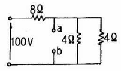
- 20
- 40
- 60
- 80
(정답률: 알수없음)
64. 그림과 같은 회로는?
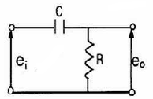
- 가산회로
- 승산회로
- 미분회로
- 적분회로
(정답률: 알수없음)
65. 대칭 3상 전원이 aVa[V], b상 Vb=a2Va[V], c상 Vc=aVa[V] 일 때 a상을 기준으로 한 대칭분 전압 중 정상분 V1은 어떻게 표시 되는가?
- 0
- Va
- aVa
- a2Va
(정답률: 알수없음)
66. 그림과 같은 회로에서 V1=110V, V2=120V, G1=1Ω, R2=2Ω일 때 a, b 단자에 5Ω의 R3를 접속하였을 때 a, b간의 Vab는 몇 V 인가?
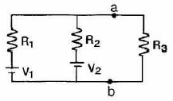
- 85
- 90
- 100
- 1⑤
(정답률: 알수없음)
67. 어느 회로에 전압과 전류의 실효값이 각각 50V, 10A이고 역률이 0.8이다. 무효전력은 몇 Var인가?
- 300
- 400
- 500
- 600
(정답률: 알수없음)
68. Z=8 + j6 Ω 인 평형 Y 부하에 선간전압이 200V인 대칭 3상 전압을 가할 때 선전류는 약 몇 A인가?
- 0.08
- 11.5
- 17.8
- 19.5
(정답률: 알수없음)
69. 대칭 다상 교류에 의한 회전자계 중 설명이 잘못된 것은?
- 대칭 3상 교류에 의한 회전자계는 원형 회전자계이다.
- 대칭 2상 교류에 의한 회전자계는 타원형 회전자계이다.
- 3상 교류에서 어느 두 코일의 전류의 상순을 바꾸면 회전자계의 방향도 바꾸어 진다.
- 회전자계의 회전속도는 일정한 각속도이다.
(정답률: 알수없음)
70. 어떤 부하에 e=100 sin(100πt+π/6)[V]의 기전력을 가하니 전류가 i=10 cos(100πt-π/3)[A]이었다. 이 부하의 소비전력은 몇 W인가?
- 250
- 433
- 500
- 866
(정답률: 알수없음)
71. 직류 R-C 직렬회로에서 회로의 시정수 값은?
- R/C
- C/R
- RC
- 1/RC
(정답률: 알수없음)
72. 4단자 회로에서 4단자 정수를 A, B, C, D 라 하면 영상 임피던스 Z01, Z02는?
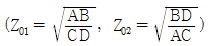
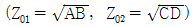
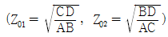
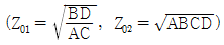
(정답률: 20%)
73.
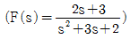
의 라플라스 함수를 시간 함수로 고치면 어떻게 되는가?- F(t)=e-1-2e-2t
- F(t)=e-1+te-2t
- F(t)=e-1+e-2t
- F(t)=2t+e-t
(정답률: 알수없음)
74. 그림과 같은 4단자망의 명상 전달함수 θ는?
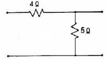
- √5
- loga√5
- loga1/√5
- 5loga√5
(정답률: 알수없음)
75. 다음과 같은 회로의 전달함수는? (단, 초기조건은 0 이다.)
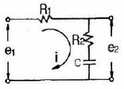
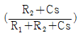
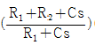
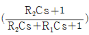
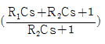
(정답률: 30%)
76. 비정현파의 성분을 표시한 것이다. 일반적인 표현으로 가장 바르게 나타낸 것은?
- 직류분 + 고조파
- 교류분 + 고조파
- 기본파 + 고조파 + 직류분
- 교류분 + 고조파 + 기본파
(정답률: 알수없음)
77. 어떤 회로의 전압 및 전류가 V=10∠60°, I=5∠30° 일 때 이 회로의 임피던스 Z[Ω] 값은?
- √3+i
- √3-i
- 1+i√3
- 1-i√3
(정답률: 알수없음)
78. 그림과 같은 회로가 정 저항 회로가 되기 위한 L은 몇 H 인가?
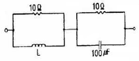
- 0.01
- 0.1
- 2
- 10
(정답률: 알수없음)
79.
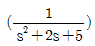
의 라플라스 역변환 값은?- 1/2e-1sin2t
- 1/2e-1sint
- e-2tcos2t
- 1/2e-1cos2t
(정답률: 0%)
80. 회로에서 t=0 인 순간에 전압 E를 인가한 경우, 인덕턴스 L에 걸리는 전압은?
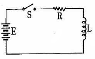
- 0
- E
- LE/R
- E/R
(정답률: 알수없음)
수정 발진기는 공진 주파수에서 큰 진폭을 가지므로, 발진 주파수가 fs와 fp 사이에 있어야 한다. fs는 직렬 공진주파수이고, fp는 병렬 공진주파수이므로, 발진 주파수는 fs와 fp 사이에 있어야 한다. 따라서 "fs > f > fp"가 옳은 답이다.